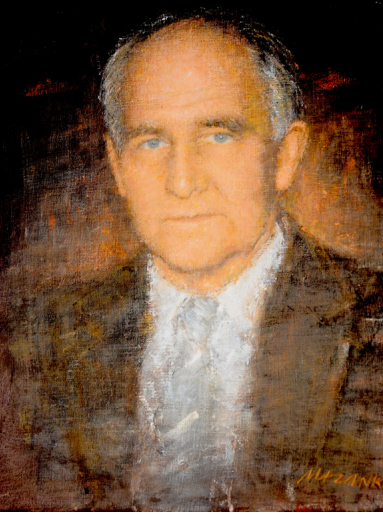

Tekst: Thor Einar Hanisch
Årsmøteforedrag, Agder Vitenskapsakademi 2014
Vedlegg til hovedforedraget - Kristiansand Museum gjennom 23 år 1965 –1988
Preses, akademisekretær, akademikolleger og gjester!
Det er en stor glede for meg å holde kveldens hovedforedrag om rektor, dr. philos. Halvor Vegard Hauge som institusjonsbygger. For Hauge har så visst sin plass i vår høyere utdannings- og forskningshistorie på Sørlandet. Om han kan en si, som det har vært sagt om store profiler før, at han kom, så og vant. Kom gjorde han 1. august 1960, fra lektorat i Drammen til stillingen som rektor ved Kristiansand Katedralskole, etter først å ha søkt rektorstillingen ved Arendal gymnas, som han ikke fikk. Han hadde vitenskapelig bagasje som dr. philos. i ferskvannsøkologi og erfaring som forskningsleder fra Institutt for Atomenergi på Kjeller. I 1973 ble hans vitenskapelige basis ytterligere befestet under vikariat for professor Olav Gjærevoll ved Universitetet i Trondheim, da Gjærevoll var landets første miljø- vernminister. Hauge fikk legitimitet i universitetskretser og ble tatt alvorlig da han la grunnlaget for Agders ennå i dag store sak: Universitetet. Det ville han for øvrig plassere, og det alt i 1960-årene, på et 2000 mål stort område han hadde sett seg ut på Jegersberg-Presteheia. Det var så nær Gimlemoen som det den gang gikk an å komme. Ingen før han hadde ellers tenkt at Katedralskolen skulle kunne flyttes fra byen til Oddemarka, som den gang lå i Oddernes kommune.
Så gikk da dr. philos. Halvor Vegard Hauge til verket–som strateg, alliansebygger og iverksetter. Dette var egenskaper som skapte forutsetningene for den institusjonsbyggeren han ble.
Strategen: Nesten umiddelbart tok Hauge initiativ til oppstarting av Agder Akademi og Universitetskomiteen for Sørlandet. Han ga disse en sammensetning som trakk på bærende krefter i hele landsdelen. Han utviklet potensialet i Kristiansand Museum, senere Agder Naturmuseum og Botaniske hage, til, i tillegg til Kristiansan Katedralskole, å være base for den undervisning i universitetsfag han initierte. I tillegg så han etter hvert betydningen av den pilaren Norges Handelshøyskoles desentraliserte virksomhet ved Kristiansands Handelsgymnasium–under ledelse av en annen respektert rektor, Ewald Junker–kunne være. Det var ikke minst viktig da temaet distriktshøyskole for alvor kom på banen i og med Ottosen-komiteens innstillinger, og Komiteen for Økonomisk College i Kristiansand vant fram med sin visjon om regionalisert høyere økonomisk-administrativ utdanning. Det var en visjon komiteen delte med inspiratoren, kristiansanderen, rektor Dag Coward ved Norges Handelshøyskole. Hauge ville nok likevel helst tatt universitetet på direkten, men innså fort at veien dit måtte gå via distriktshøyskolen.
Dermed søkte han og fikk direktørstillingen ved distriktshøyskolen. Det var en stilling som den gang, siden noen rektor ikke fantes, ga økt vingespenn. Inntil da hadde han vært katedralskolerektor, automatisk styreformann for Museet, og toneangivende i Universitetskomiteen og Akademiet, men uten selv alltid å være formell preses eller formann. Det er neppe tvil om at denne posisjoneringen var frukt av strategiske valg han så som nødvendige for å vinne fram med selve kongstanken: Universitetet.
Hauge så og realiserte langt på vei potensialet for samarbeid med Sørlandets Tekniske Skole i Grimstad ved rektor Einar Grude, «ingeniørutdanningens far i Agder», ved institusjonen som senere ble til AID, Agder ingeniør- og distriktshøgskole, og med Kristiansand lærerskole, senere KLH, ved rektor Wilhelm Aarek, en av landets eldste og største lærerutdanningsinstitusjoner. Begge de anerkjente rektorene, Einar Grude og Wilhelm Aarek, engasjerte seg tidlig i universitets- og distriktshøyskole-saken. Det gjorde også, og ikke minst, landsdelens to aktive skoledirektører, Hallgeir Furnes (VA) og Henrik Bargem (AA), Bargem senere også i viktig funksjon som statssekretær for kirke- og undervisningsminister Kjell Bondevik. Men alliansebyggingen til Hauge omfattet selvfølgelig også i heldige øyeblikk, når prosessene skjøt fart, Agder-representantene på Stortinget, landsdelens fylkesmenn, fylkesordførere, og ordførere, lokalpolitikere og rådmenn og toneangivende regionale næringslivsledere og avisredaktører. Av stor betydning var også hans evne til å finne fram til folk i de akademiske miljøer, spesielt ved Universitetet i Oslo, som delte, eller kom til å dele, hans visjoner for Sørlandet. Viktigst blant de første og fremste var nok UiO- professorene Eiliv Skard og Ole Koppang.
Hauge var systematikeren som bygde stein på stein. Eksempler på slag han vant, og som var viktige for sin tid, var, under varierende grader av motstand, å skape mulighet for desentralisert immatrikulering av studenter på Sørlandet, å gi undervisning til forberedende prøver lokalt, å sprenge universitetssatte grenser for å gi undervisning på grunnfagsnivå. Dette banet etter hvert vei for seinere mellomfagtillegg og stadig flere realfagemner gitt desentralisert.
Dyktige lærere til alt dette fant han ofte ved eller nær egen institusjon. Den var i hans lange rektorperiode fra 1960 til 1981 tross alt Kristiansand Katedralskole. De to årene fra sommeren 1969 til sommeren 1971, i permisjon for å være ADH’s første direktør, var bare en gjesterolle i den lange sammenhengen. I likhet med kollegaen Kjølv Egeland i Rogaland ble universitetsmannen Hauge aldri helt ut distriktshøyskolemannen Hauge. Men uansett hvor disse to, nå avdøde riddere av St. Olavs orden, hadde sine baser, jevnet de begge i imponerende grad vei i hver sin region. Først fram mot distriktshøyskolen. Og så framover mot universitetet! Dette kan sies å være en korttekst om Hauge slik den kan gå inn som kronikk i en travel avis. Men her i vårt eget Agder Vitenskapsakademi og i vår årbok gis det en velkommen anledning til å gå nærmere inn på så vel mannen som verket. Det kunne være fristende først å ta for seg mannen og så verket. Men her synes det nesten umulig. Så nært er de knyttet sammen. Spesielt gjelder det når vi skal begrense oss til å bringe noe lys over hans innsats på den kristiansandske og i noen grad sørlandske arena. Mannen Hauge ble formet tidligere. Om han var født og vokst opp i Lier i Buskerud, og tok artium i Drammen, kjente han røttene sine fra Vegårshei så sterkt at han i godt voksen alder knyttet Vegard til sitt navn, men beholdt Halvor og Karsten.
Så objektivt og nesten selvironisk beskriver Hauge, i sitt egenfinansierte storverk om Kristiansand Katedralskole (ScholaChristiansandensis 1960–1980, 1981) sin inntreden her sommeren 1960: Den nye rektor var ikke innstilt verken av lærere eller forstanderskap. Det vakte derfor stor undring og misnøye at skolens ualminnelig dyktige og høyt avholdte inspektør, William Myhre-Nilsen, som var innstilt som nr. 1 av alle lokale instanser, ikke ble utnevnt. En undring som for så vidt deles av den nye rektor, og han forstår at forstanderskapet stilte seg spørrende til hvilke grunner departementet hadde for å gå utenom forstanderskapets innstilling. I hvert fall, uten forkleinelse for Myhre-Nilsen, inspektøren og lektoren som vi elever, og i høyeste grad kollegene ved skolen, satte pris på og respekterte, kom Hauge utenfra mot alle odds. Han ble for øvrig hjertelig mottatt av en inspektør som var det stikk motsatte av en «bad loser». Noen slik taper, det har for øvrig Hauge selv heller aldri vært. Men en så jo hans rynkede bryn som uttrykte skuffelse når ett eller flere av hans hjertebarn blant prosjektene ikke tok av raskt nok til å matche hans til tider, og oftest helt ut forståelig, ikke så lite utålmodige sjel.
Slike prosjekter omfattet også lokaliseringsprosjektene og byggeprosjektene han lanserte og målbar. Konkret gjaldt det Katedralskolens og Museets alltid levende byggeplaner, og mer visjonært: lokaliseringen av det framtidige universitet. Det var stort at det etter hvert ble bygging for alle på Gimle, ikke for Katedralskolen på Grim, som han først hadde tenkt seg. Denne hans hovedplattform og første kjærlighet, hans Schola Christiansandensis, var fra først av kalt «byens didaktiske institutt»: Fattigskole, borgerskole og latinskole i ett. Den var der jo allerede fra ca. 1650, da det bare var 50 hus i byen! Dette var likevel om lag 500 år etter at de tre første katedralskolene i Norge kom til.
Alt høsten 1960, to år før Agder Akademi ble etablert 27.oktober 1962 med Hauge selv som den første preses, og tre år før Universitetskomiteen var et faktum, med Sverre Walter Rostoft som formann, lanserte Hauge universitetsambisjonen. Det gjorde han fra sin første bastion, i tillegg til Katedralskolen selv: Museet. Kulturredaktør Oddvar Munksgaard forteller malende om mottakelsen av ideen i en bredt anlagt artikkel om Hauge i Fædrelandsvennen 1. september 1979:
Jeg satt som medlem av Kristiansand Museums styre da Katedralskolens nye rektor i egenskap av formann utmalte sine vyer om Kristiansand som universitetsby for et nokså måpende kollegium. Satt han kanskje ikke der og mente alvor? Jeg gikk hoderystende hjem til familien og berettet om feberfantasiene. I grunnen var det litt synd på ham, for vi imøteså hvordan idealisten ville brase hodet i veggen i rådhus og departementskontorer, hvor pengesekkene erfaringsmessig var knyttet med femdobbelt muleband. Men det var naturligvis både logikk og konsekvens i alt han sa. Vi kunne ikke være uenige med ham, sånn sett. Og når han klasket i bordet den historiske kjensgjerning at biskop Gunnerus i Trondhjem Stift alt i 1771 fant at Kristiansand var et passende sete for et universitet, så var jo rektor i det minste i godt selskap. (...) Vi visste ikke da hvilken bulldoser denne nye dr. philos. i rektorstolen virkelig var. At han ikke dunket hodet i veggen, men gikk tvers gjennom den. Vi skulle lære ham å kjenne som såmann i en ny kulturell grotid. Utfra de relativt sett traurige og beskjedne forhold som var så vel ved Katedralskolens som ved Museets i 1960-årene, må man si at det var mektig godt gjort av Hauge å gå så sterkt ut.
Ved en kollegiesammenkomst på Hotel Norge i 1966 meddelte han at en rekke kolleger slutter, og skolens forstanderskap må vi også si farvel til, skjønt det nye utvalg ennå ikke er ferdig oppnevnt og konstituert! Og han fortsetter: Trist er det at vi ennå ikke kan si farvel til våre utjenlige skolebygninger. Ja, hva sier ikke Odd Hølaas om hva han følte for disse bygninger allerede for en mannsalder siden. Han skriver om Herman Smitt Ingebretsen at han hadde en krets av venner omkring seg som brødrene Schelderup, Erling Tobiassen, Einar Edwin og Josef Faaland, kort sagt et lite akademi av begavet ungdom, et nyttig og utviklende suffiks til den tunge og dystre Katedralskolen. Til tross for at jeg nok må si at jeg i de år jeg har vært ved Katedralskolen har opplevet lignende stimulerende suffikser, må jeg innrømme at jeg ved flere anledninger har vært sterkt fristet til og oppfordret til å forlate en skole som bys slike kår. Når jeg hittil ikke har gjort det skyldes det nettopp elevene og kollegiet. Og karakteristisk nok tilføyer han så i ettertankens streiflys: «Jo mer man lærer mennesker å kjenne, med deres svakheter og fortrinn, jo mer trer de gode sider fram og de feil vi alle er beheftet med kommer mer i bakgrunnen.»
Som rektor gav han en annen gang overfor Katedralskolens tidligere elever uttrykk for–ikke uten humor–en viss avmakt. Jeg er lite vant til å dirigere, nå til dags dirigeres rektor både ovenfra og nedenfra fra fylkesskolestyre og elever. De fleste av dere har vel hørt nå hvordan en kollega noe treffende karakteriserte rektors situasjon før og nå. Han sa det slik: Når det ble meldt at en elev skulle komme til rektor, meldte spørsmålet seg: Hva galt har nå han gjort, men i dag når en elev kommer inn på rektors kontor tenker han, rektor, hva galt har nå jeg gjort! Vel, den mulighet er der fremdeles, tross alt, at man kan la seg dirigere innenfra og ovenfra i de store saker som gjelder skolen, tilføyde han så noe mer offensivt. Det forhindrer imidlertid ikke at da elevdemokratiet ble innført på Katedralskolen, så han at det fungerte godt, selv om han enn innrømmet å ha vært noe skeptisk i utgangspunktet.
Enda verre stilt enn Kristiansand Katedralskole som katapult for et universitet var Kristiansand Museum, som da nærmest var en integrert del av skolen og rektors portefølje. Fædrelandsvennen omtaler dets kranke skjebne så sent som i 1986 som en 35 år gammel skandale. I 1951 ble museet ifølge avisen regelrett kastet ut av de lokaler man i en årrekke hadde disponert i 2. etasje i den gamle bibliotekbygningen, og som en skrev, Museet ble henvist til å stuve sammen alt sitt habengut på bibliotekloftet.
Da Hauge i 1960 kom til Kristiansand, og i stillings medfør overtok som museumsstyrets formann, var noe av det første han gjorde, sammen med vaktmesteren, å trekke fram fra en fullstappet skuff i et gammelt kjøkkenbord på bibliotekloftet de høytidelige papirer om museets utvikling tilbake til starten i 1828. «Vi gikk igjennom alt sammen, og det var en opplevelse som fikk en nesten til å gråte,» fortalte Hauge. Da hadde det alt i mange år vært forholdsvis klart at museet måtte få sine permanente lokaler på Gimle gård, der museets verksteder hadde fått opphold i det gamle grisehuset og griseslakteriet.
Selv om Hauge hadde god greie på byggesaker, og flere ganger imponerte også med på egen hånd å utarbeide, ja til og med av egen lomme også finansierte planutkast, sto nok hensynet til elevene fremst i hans forestillingsverden. Han hadde sett fra egen studietid hvordan mange studenter ikke klarte overgangen fra hjemstedet til Oslo. Noe av det samme hadde han sett som lektor på gymnaset på Voss: Elevene kom fra hele landet og kunne enten gå til topps, eller gå helt ned. Han mente derfor at kunne de få et par ekstra år i hjemmets arne, så ville det være en stor vinning:
Derfor benyttet jeg meg av den meldingen til Stortinget hvor det sto at enkelte skoler kunne få lov til å ha undervisning videre. Det grep jeg med en gang og undersøkte om det var mulig for oss å få i stand undervisning til forberedende prøver. På enkelte hold ble jeg møtt med at Universitetet kunne ikke gå ut og holde forelesninger utenfor Universitetet. Da sa universitetets rektor, Johan Tidemand Ruud: «Dette er tøv. Jeg har jo i mange år holdt mine forelesninger på båter i Finnmarkshavet for mine studenter.» Dermed falt det argumentet til jorden. Sammen med professor Eiliv Skard ved Universitetet i Oslo, han som Hauge først kontaktet og som ble til så stor hjelp gjennom mange år, begynte Hauge så å plukke ut forelesere. Skard holdt selv den første forelesningen 10. september 1962 i pikenes gymnastikksal på Katedralskolen. Hauge omtalte begivenheten som en stor opplevelse. Lektorene Håkon Flottorp, Olaf Larsen, William Myhre-Nilsen, Helge Bergstad, Fredrik Werring, Tore Austad og Harald Synnes var blant dem som tidlig ble utvalgt til å gi universitetsundervisning.
Hvem var først ute, Kristiansand eller Stavanger? Hauge var alltid klar på at det var fra Kristiansand det første initiativet ble tatt, og omtaler det slik: Etter at vi hadde vært inne i Oslo og snakket med Universitetskollegiet holdt jeg pressekonferanse etter at jeg kom hjem. Da presiserte jeg overfor journalistene at nå måtte de ikke ha et oppslag om Universitetet i Kristiansand. Men neste dag slo Christiansands Tidende opp en overskrift over hele førstesiden: Universitetet i Kristiansand. Dermed kom dette i Aftenposten, og dermed kom det til stortingspresidenten, Gustav Natvig Pedersen, som også var rektor ved Stavanger Katedralskole. Så skrev han til meg, ikke offisielt, men på et stykke papir med fin gammelmanns skrift, og spurte om hvordan jeg hadde fått dette til, og om han kunne få vite hvordan han skulle gå frem. Det var på den måten det gikk til. Men nå hevder Stavangerfolk at det var de som var først ute, og at Kristiansand hele tiden har fulgt etter Stavanger. For øvrig holdt daværende kirke- og undervisningsminister, Helge Sivertsen, på å bli vippet av taburetten på grunn av det vi hadde satt i gang. Per Lønning, som da var stortingsrepresentant, reiste nemlig spørsmål i Stortinget om hvordan man kunne tillate Kristiansand å begynne med slik undervisning. I den forbindelse var det ikke snakk om Stavanger i det hele tatt. Slik gikk det altså til at Stavanger med stortingspresidentens tyngde da kontaktet Bergen og fikk satt i gang det samme, og da hadde så vidt jeg husker Natvig Pedersen Kjølv Egeland som vikar for seg som rektor på Katedralskolen i Stavanger. Dermed brøt det løs i Stavanger. (...) Men vi var opptatt av universitetstanken blant annet i en senere samtale med Kristiansands kulturdirektør Edvard Brøvig, og reiste inn til Oslo for å drøfte det med Helge Sivertsen. Men først var vi innom vår egen representant, Jens Haugland, som da var justisminister, for han ville gi oss noen gode råd om hvordan man oppførte seg hos en statsråd. Vi måtte for all del ikke fortelle at vi hadde vært innom Haugland, for det var det verste som kunne skje at man gikk fra en statsråd til en annen for å bruke dette i forhandlingene. Vi hadde med oss et kart, og det la vi på pulten til Helge Sivertsen da vi kom inn til ham. Jeg hadde i sin tid gått på pedagogisk seminar sammen med Sivertsen. Ja, mine herrer, sa Helge Sivertsen, skal man bygge et universitet, så krever det store arealer. Arealer, sa Rostoft, vi har nok av arealer og pekte på 2000 mål i Jegersberg-Presteheia. Alt dette kan legges ut til universitet. Ja, det var litt av en opplevelse.
Senere gikk det slag i slag, alltid med Hauge som viktig pådriver for et universitet på Sørlandet. Og også som aktør, i hvert fall fram til han for oss andre så spontant og uventet forlot direktørstillingen ved Agder distriktshøgskole forsommeren 1971. Men Lars Aase tok snart over, en kraft Hauge hadde den største tiltro til. I sin korte tid ved ADH var Hauge en drivende, men også krevende sjef for oss andre få som la planene og hadde det faglige ansvaret helt fra starten. Som oss kom han i juli 1969 til vår fullstendig uoppdelte og uinnredete etasje i Norske Folk-bygningen ved Wergelandsparken. Da hadde jeg dagen før fått telefon fra ekspedisjonssjef Enevald Skadsem i departementets universitets- og høgskoleavdeling om at rektor Halvard Vegard Hauge var engasjert som direktør, og Andreas Vollan og jeg som høgskolelektorer og ansvarlige for undervisningen –jeg også som faglig og administrativt ansvarlig for planleggingen av denne, som konstituert undervisningsleder til Tormod Hermansen kunne tiltre året etter. Jeg måtte straks ringe rektor Hauge, som ble noe paff fordi han nok ventet telefon fra Statsråden, og ikke fra sin konstituerte undervisningsleder, som rimelig var. Beskjeden fra Oslo var at alt måtte være klart til å ta opp og imot det første kullet på inntil 54 studenter ultimo august. Dette ble sommeren helt uten ferie for noen av oss. Hauge spurte seinere, omsorgsfull som han ofte var, min kone Kirsten om han slet meg ut, og svaret var ja! Det var et svar som nokså typisk utløste et noe forskrekket lite smil i hans ikke helt ubekymrede ansikt.
Sikkert var det i hvert fall at vi alle sto på noe forferdelig, men at vi også hadde det uhyre interessant. Vel var det nok en av de artigste og mest improviserende perioder i vårt liv. Vår belønning var at Hauge i en sammenkomst på Hotell Norge for familie, venner og tidligere kolleger 20. mars 1984 tok et langt tilbakeblikk og sa dette:
Kristiansand Museum hadde i januar 1963 ubestaltet nedsatt en universitetskomite som i løpet av året ble offisiell. Denne komite arbeidet tungt de to første årene, men så kom skoledirektør Hallgeir Furnes til byen og fra 1965 ble han aktivt medlem av komiteen og gav også komiteen møtelokale og en sekretær med usedvanlig arbeidsevne, Lars Aase. Det videre framgangsrike arbeidet kan vi takke Hallgeir Furnes og Lars Aase for. Det arbeid som ble utført i og med selve undervisningen ved UVIK og av Universitetskomiteen, var vel ved siden av politikerne Jens Haugland, Kolbjørn Stordrange og Bent Røiselands arbeid, utslagsgivende for at Agder fikk sin ADH. De som gjorde det største og vanskeligste nybrottsarbeidet de to første årene var nok Andreas Vollan og Thor Einar Hanisch. Høgskolen ble etablert og kom i gang, men den som virkelig fikk den organisert og bragt den opp som den første blant distriktshøgskolene var direktør Lars Aase. Dette gir meg anledning til selv å si noe mer om Lars Aase, som jeg synes er noe glemt i fremstillinger som fra ulike hold har vært gitt om den første ADH-tiden. Det var altså han som i 1971 avløste Hauge som direktør for ADH, og som Hauge med rette hadde så stor tiltro til. Du verden så artig det var å oppleve den staute kvinndølen da og der han så energisk for fram. Alt da han kom til ADH var han en nasjonalt fokusert leder for det den gang så spennende, men også i noen kretser kontroversielle organet Forsøksrådet for skoleverket, som han etter hvert syntes ble for mektig for forsøksvirksomhet og derfor anbefalte nedlagt! Han kom utvilsomt fra Forsøksrådet til ADH og så til AHS, Agder høgskolestyre fra 1976, med visjoner om hva som kunne utrettes, og fant nok en annen virkelighet her. Som hans like visjonære forgjenger Halvor Vegard Hauge ønsket han mye realisert på kort tid. Begge overrasket med å slutte så altfor tidlig, Hauge i 1971 etter to år ved ADH, Aase i 1980 etter ni, inklusive AHS, på slutten etter en to-års samarbeidsperiode med Knut Brautaset. Brautaset ble innstilt som nr. 1 til stillingen etter Aase, men foretrakk en faglig mekatronikk-karriere, og ble seinere HiAs første rektor, selv om han først var motstander av høyskolefusjonen i 1994. Men det var jo de fleste interne, da som nå. Dermed fikk jeg, som var innstilt som nr. 2, tilbudet, og sa ja. Det gjorde jeg selv om tilværelsen som regional høyskoledirektør for Hordaland, med ansvar for 14 høyskoler og tilbud om familiebolig i kulturperlen Gamle Bergen, og fortsatt samarbeid med universitetsdirektør Magne Lerheim og direktør Arne Smedal, blant annet gjennom Selskapet for Utvikling av Næringslivet på Vestlandet på Chr. Michelsens Institutt, i ett konsolidert fylke, lokket noe ganske veldig. Fra Agder, som også da var splittet og hadde langt mindre høyskolevirksomhet, men honnørstikket Distriktshøyskolen å komme tilbake til, fikk jeg via studiesjef Per Henrik Iversen høre fra datidens DH-rektor, at «dette skal nok gå greit Thor Einar, bare du legger deg flat!» Og da våknet jo selvsagt kamp- og skrivelysten i meg. Etter denne digresjonen, som jeg ikke kunne motstå, stiller jeg spørsmålet: Hvorfor sluttet Hauge og Aase så tidlig?
Kanskje er det riktig å tilføye: Begge gikk av mer eller mindre i protest, eller skal vi si det mer positivt, eller kan hende mer korrekt: for å medvirke til at forholdene kunne legge seg bedre til rette uten at de selv lenger satt i førersetet? «Når det gjelder den senere tids utvikling, er det i første rekke samarbeidet mellom de to Agder-fylkene som har forårsaket problemer», skrev Fædrelandsvennen. «Forslaget om å slå saman Agderfylka er ikkje berre betimeleg, det er overmodent», skrev Aase, et budskap som, for å bruke et understatement, ikke akkurat gikk rett hjem i Aust-Agder! Men før det hadde idealisten, og vi kan vel også si desentralisten Lars Aase, alt i 1980 flyttet AHS-sekretariatet fra Kristiansand til Grimstad, nok for å komme Aust-Agder i møte og for å styrke Aust-Agders posisjon og fokus. Et sekretariat, vi kan vel også gjerne si landets minste og mest serviceivrige «byrå- krati», av noen like fullt kalt «det dobbeltsentraliserende leddet», om vi enn stort sett bare var to til tre ansatte i «leddet» og sparte mange årsverk om hver høyskole skulle gjøre hele arbeidet selv. I Kristiansand hadde Lars nok stort sett vært alene, men med en alltid supergrei og innsatsvillig Olav Breen på halv tid til hjelp. I hvert fall, flyttingen til Grimstad kom som en komplett overraskelse på meg og ga meg fjorten nye år med pendling til Kristiansand etter åtte fra Oslo og Hordaland. Men jeg hadde jo stor glede av AHS-samarbeidet med veldig dyktige medarbeidere som Harald Olsen, Helge Møll, og Åse Gjertsen og, selvfølgelig, dyktige og engasjerte styreledere: Louis Støve V, Harald Synnes Krf, Ole Guttorm Ihme H, Randi Øverland A, Ivar Netland A, alle Vest-Agder, og Jarl Røeggen A, Kitty Ottersland H, Alf-Eivind Ljøstad KrF fra Aust-Agder. Det var også fint å oppleve så seriøse studentrepresentanter som Seunn SmithTønnessen, i dag assisterende universitetsdirektør ved UiA, og Terje Damman, i dag fylkesordfører i Vest-Agder.
Hauge på sin side grunnga sin avgang fra ADH slik: Etter to anstrengende år syntes det nødvendig å hjelpe til å fjerne det inntrykk som begynte å festne seg i landsdelen, nemlig at Agder distriktshøgskole var en Kristiansandssak og et arbeid spesielt til beste for denne by. I et forsøk på å endre dette og for å gjøre byen enda mer oppmerksom på de krav som ble stilt den som vertskapsby for distriktshøgskolen, valgte direktøren å vike plassen for en ny. Det viste seg å være riktig. De to neste prøveårene ble nok også vanskelige for administrasjonen, men høgskolen vokste da stort i organisasjon og utforming. Hauge tok også konsekvensen av at ADH mer og mer ville ta over universitetsundervisningen og meddelte Kristiansand kommune ved Formannskapet at han anså seg løst fra sine forpliktelser i Universitetskomiteen for Sørlandet. Som svar fikk han dette fra ordfører Einar Hansen: Formannskapet vil gjerne føye til: etter velgjort arbeid. Uten Deres pågangsmot og innsatsvilje hadde vi i dag neppe hatt Agder distriktshøgskole eller universitetsundervisning her i Kristiansand. Formannskapet har forsøkt å følge opp Deres initiativ i tro på at resultatene er til gagn for ungdommen og for landsdelen. Takk for innsatsen. Universitetskomiteen for Sørlandet hadde da virket fra 1963, med Kristiansands Mekaniske Verksted-direktør Sverre Walter Rostoft som første formann, og lagt ned i 1972, da oppgavene ble overtatt av Rådet for ADH, med Hunsfos-direktør Trygve R. Jarlsby og fylkesskogsjef Paul Reine som ledere. Ved høyskolefusjonen i 1976, da det regionale høyskolestyret tok over, var det ikke lenger aktuelt med separate råd for enkelthøyskoler, og Rådet for ADH ble lagt ned. Nå er det heller ingen hemmelighet at Hauge slett ikke alltid var fornøyd med støtten fra kommunen, spesielt ikke når det gjelder bygg for Museet, byggesaken som han en gang omtalte som en 150 års lidelseshistorie. Dette trass i mange innovative og grundige fremstøt fra Hauges side for å få saken løst, og medvirkning fra gode medarbeidere som Peter Valeur, som Hauge dro til Bergen og hentet hjem, Ovin Udø, Per Arvid Åsen, Gerd Buene Mortensen, og alle de frivillige som for eksempel Jostein Andreassen, og Haakon Damsgaard, som i 13 år arbeidet med samlingene, og for å få saken løst. Men ideen om et universitet på Sørlandet fikk et kraftig støt fremover alt 1. oktober 1960, bare to måneder etter Hauges tiltredelse som rektor, da Vest-Agder Folkeakademier holdt sin kulturkonferanse under ledelse av formannen, magister Gunnar Brøvig, der både han og mange deltakere uttalte seg positivt for tanken om universitetet. Året etter, 23. oktober 1961, oppnevnte KM et utvalg som i første omgang, som vanlig på initiativ av Hauge, skulle arbeide mot det nære mål å realisere en humanistisk avdeling ved Kristiansand Museum, og for det fjernere mål–et universitet på Sørlandet. I utvalget ble i første omgang, disse med: Hauge selv som formann, redaktør Johannes Seland, journalist Oddvar Munksgaard, magister Gunnar Brøvig, statsarkivar Lauritz Repstad, lektorene Helge Bergstad, Gerhard Kjellevold, forfatteren av viktig bok om Kristiansand Museum, Trygve Mong, Fredrik Chr. Werring og Haakon Flottorp, som ble Agder Akademis første sekretær. Senere kom adm. direktør Sverre W. Rostoft, min og min kone Kirstens dyktige og innovative toppsjef ved Kristiansands Mekaniske Verksted til. Han ble også sammen med ordfører Leo Tallaksen, som Hauge karakteriserte som uredd, perspektivrik og fremsynt, professor Alf Sommerfelt og Hauge selv med til statsråd Helge Sivertsen 22. november 1961 i Oslo for å høre dennes syn på 1) å gjøre Kristiansand Katedralskole til statsskole, svar: avgjort nei, og 2) å sette i gang universitetsundervisning i Kristiansand, svar: ikke avvisende til forberedende prøver, men henviste spørsmålet om fagstudier til avgjørelse i Stortinget.
En videre push til universitetssaken gav Agder Akademi da det ble stiftet på initiativ av Hauge 27. oktober 1962 i Arendal, og hadde universitetet som første sak og viktigste anliggende. Fra Arendals side ble det sagt at en var informert om tiltaket noe nær for seint, men resultatet av møtet ble likevel at en støttet fullt opp om det. For å nå målet så Hauge at det var nødvendig å se hele Agder som politisk ressurs. Styret han satte sammen, var likt fordelt Agder-fylkene imellom, med fylkesmann, tidligere stortingsmann Henrik Svensen, Arendal, senere preses, rektor Ola Nordal, Grimstad, overrettssakfører Guttorm Stray, Kristiansand, og justisminister Jens Haugland, Kristiansand, men opprinnelig Setesdøl. Som varamenn stilte skoleinspektør Helge Rosenberg og stortingsmann Torvald Håverstad, begge Aust-Agder og redaktør Magnus Breilid og overlege Carl Rosendal, Vest-Agder. Også representasjonen til akademiets råd ble satt sammen etter samme prinsipp. Men et par andre prinsipper lå også til grunn: Ønsket om akademisk kompetanse, og ønsket om å speile av viktige yrker og funksjoner i samfunnet. Her finner vi biskop for Agder og Telemark Kaare Støylen, bestyrer Gunnar Dannevig, Flødevigen, redaktørene Johannes Seland, Fædrelandsvennen og Einar Gauslaa, Agderposten, rektor Gunnar Lande, Søgne, tidl. stortingsmann Einar Iveland, Iveland, forsøksleder Kaare Aamlid, Landvik, Lærerskolens rektor Wilhelm Aarek, tidl. fylkesmann Nils Hjelmtveit, Eydehavn m.fl. Det fører for langt å nevne dem alle. En kan nesten si: Det meste av Agders kompetanse og operative evne var samlet ved stiftelsen av Agder Akademi 27.10.1962. Hauge så Akademiet som en presserende vitenskapelig sak i seg selv, men brukte det systematisk for å fremme universitetssaken for alt den var verd. Antakelig gikk han med stor politisk teft proaktivt og preventivt ut med Magnus Breilids hjertesukk av 29.8.1962 til Stavanger in mente: «Det har vore eit tungt og vanskeleg arbeid å sameina Agderfylka om Akademiet, for det ligg lettare for egdene å stridast om ein ting enn å samarbeida».
På sin side intensiverte Universitetskomiteen for Sørlandet stadig sitt arbeid etter at den gjennom sitt medlem Hallgeir Furnes fikk en ny giv, inciterende støtte, ideelle arbeidsforhold og dyktig sekretærhjelp i Lars Aase og Toralf Tveiten, fremholdt Hauge. En utførlig rapport om denne viktige komiteen og dens virksomhet har Mildrid Sløgedal skrevet i nær kontakt med Hauge og Aase, etter oppsett og idé av Olav Breen. Komiteen ble oppløst og dens midler og arbeidsoppgaver overført til det nyopprettede Råd for ADH høsten 1973. 1. september 1971 fratrådte Hauge som direktør for ADH og gikk tilbake til stillingen som rektor ved Kristiansand Katedralskole. Samtidig trakk han seg tilbake fra vervet som formann i Universitetskomiteen. En enstemmig komité bad han om å fortsette, samtidig som det ble presisert at ADH´s nye direktør, Lars Aase, ble betraktet som ordinært medlem av komiteen. Direktør Aase fant det imidlertid ikke naturlig å gå inn i den, og rektor Hauge meddelte i brev av 20. desember 1972 til bl.a. fylkene og Kristiansand kommune at han betraktet seg som løst fra vervet, og reiste samtidig spørsmålet om tiden var inne for en reorganisering av arbeidet. Fram til og med november 1969 virket Universitetskomiteen med Aust-Agder-rektor Odd Chr. Fiane fra Åmli som formann, som departementsoppnevnt interimsstyre for ADH. Da fikk ADH sitt eget styre, som var i funksjon ut prøveperioden for distriktshøgskolene fram til 1975, med skoledirektør Henrik Bargem AA og rektor Louis Støve VA som ledere.
En systematisert oversikt over de fleste viktige studier og aktører som drev selve universitetsundervisningen i Kristiansand fram til ADH overtok alt, har Gerd Buene Mortensen utarbeidet. Den er datert 7. april 2014, og følger rett etter dette foredraget. Gerd Buene Mortensen er som Hauges sekretær, og etter hvert administrativ leder under han, et viktig tidsvitne for denne omfattende virksomheten og for museets egen virksomhet i hennes funksjonsperiode, som var fra 1965 til 1988. Her står også alle som hadde verv i Museet og UVIK, og de viktigste av underviserne omtalt. Det vil føre for langt å komme nærmere inn på disse her. Den første perioden i distriktshøyskolenes liv sto ellers i studentopprørets tegn, uten at det slo særlig inn over oss i Agder. Men motstanden fra universitetets studenter og enkelte universitetslærere mot opprettelsen av distriktshøyskolene var veldig merkbar nasjonalt. På sitt verste ble vi som startet opp, karakterisert som lakeier for monopolkapitalismen og «universitetsdødere», i beste fall potensielle tappere av kompetanse som universitetsstudentene syntes deres arnesteder kunne trenge selv.
Siden kom det likevel så vel AKP-ml-ere som mer moderate 68-ere inn i lærerstaben også hos oss, og de sto slett ikke tilbake i innsats og engasjement, og etter hvert også i omstillingsevne. Universitetsmannen Hauge reagerte, som flere av oss andre, med hoderysten på de voldsomme utslag av kritikk mot Ottosen-komiteen og DH-pionerene. I boka Studenter og byråkrati av Harald Berntsen (Pax forlag, Oslo 1969) ble Ottosen-komiteen, bl.a. med Kjølv Egeland som medlem og Ingjald Ørbeck Sørheim som sekretær, «partert og anrettet på spidd.» Ja, det var en baluba, men fremfor alt en kamp om makten i og styringen av universitetene selv, og de nye institusjonene. En mer velkommen grønn bølge slo også inn over oss, og ga oss økologisk og filosofisk orienterte allmennfag. Disse var et tiltrengt tilskudd til de «hardere» økonomisk-administrative fagene. Gode støtter i dette var især Dagfinn Føllesdal og Gunnar Skirbekk fra våren 1972, da jeg ble innbeordret til departementet som nestleder for Ørbeck Sørheim, og med et særlig ansvar for å utføre sekretariatfunksjonene for Sentralutvalget for distriktshøyskolene, som ble ledet av Egil Abrahamsen.
20. juni 1969 vedtok Stortinget at det skulle settes i gang 5-års prøvedrift med tre distriktshøgskoler fra 27. august. Den dagen åpnet statsråd Kjell Bondevik ADH, blant annet med disse ord: Vi i Departementet har merkt oss det store arbeidet som er gjort av Universitetskomiteen for Sørlandet, av dei to fylka og Kristiansand Kommune. Det er eit verdfullt arbeid som alt har hatt mykje å seie for realiseringa av høgskoletanken. Vi er òg merksam på at folk flest i i landsdelen har slutta sterkt opp om tanken. Vi har derfor gode voner om ein rik vokster for Agder distriktshøgskole.
De to årene med Hauge som leder ble gode og, for mange, ytterst lærerike år. Han ble oppfattet som en energisk og empatisk Pater Familias, som brydde seg om sine medarbeidere og studenter. Når noen kom i problemer, kunne han finne utvei til å trå til, om nødvendig med personlig oppofrelse. Jeg for min del fornemmet at det lå en gudstro bak, som han da også seinere har erklært. Gode hjelpere som Gerd Buene Mortensen fra KM og UVIK og Inger Lise Syvertsen, Ellen Breen, Mildrid Sløgedal og Greta Jacobsen fra ADH og Doris Tønnessen på KK sørget for det kontormessige på sine ulike felter, GBM med kontor hos oss i Norske Folk-bygget. Høyskolebibliotekar Ingrid Terland og mange nye lærere ble tilsatt i 1970 og 1971, gode krefter som Leiv Storesletten, Aamund Salveson, Peter Young, Helge Pedersen, Arne Stray, Ragnhild Ljosnes, Bjarne Stabekk, Jan A. Stølen og Hans Erik Borgersen. Alt det første 2-årige studentkullet oppnådde ganske imponerende resultater. Nye undervisningsledere kom til, Arild Sæther for økonomist-administrativ studieretning etter Tormod Hermansen, som dro tilbake til UiB etter bare et halvår, Tor Brattvåg for data, Knut Brautaset for teknisk-økonomisk da den kom til etter et viktig arbeid i Grude-utvalget, der også Andreas K. L. Ugland og jeg var med. Kristiansand kommune sluttet godt opp om høyskolen. Det var i motsetning til det første framstøtet fra Hauges side, søknaden om økonomisk støtte til undervisning i forberedende prøver fra høsten 1962, som strandet i første omgang på at Kristiansand formannskap mente slik undervisning burde være et statstiltak. Velvilje overfor tiltaket i og for seg kom imidlertid til uttrykk. Og mest verdifullt, en mulighet ble antydet, at undervisningen kunne bli knyttet til Kristiansand Katedralskole i stedet for til Museet. Dermed var Museet som institusjon forhindret fra å komme videre, inntil det likevel noen år senere fikk startet opp forelesninger til grunnfag/mellomfag, i alt 7 universitetsfag, i samarbeid med Universitetet i Oslo og Folkeuniversitetet, i tidsrommet 1966–1980. Dermed ble ordningen slik: Da Universitetet i Oslo vedtok å desentralisere undervisning til forberedende prøver i Kristiansand, ble denne lagt til Kristiansand Katedralskole med rektor Hauge som ansvarlig leder. Denne aktiviteten var «en forlenget arm» av Universitetet og uten direkte tilknytning til det øvrige arbeidet som ble drevet av Museet og senere av Universitetskomiteen for Sørlandet. Økonomisk støtte kom inn både fra Kristiansand kommune og Vest-Agder fylke. Senere overtok ADH denne virksomheten.
Da Hauge kom til Sørlandet, hadde landet bare to universiteter, i Oslo og Bergen. En indikasjon på vanskelighetsgraden ved å få et nytt i Kristiansand viser stortingsbehandlingen i 1963 av Kleppe-komiteens innstilling av 1960. Denne komiteen, ledet av den seinere finansminister Per Kleppe, foreslo et tredje universitet i Trondheim. Stortinget ville også, etter anbefaling av departementet, utrede Tromsø som en fjerde mulighet. Til initiativene som ble spilt inn fra Agder og Rogaland, som da gikk på å få til desentralisert universitetsundervisning, ble det et betinget ja, men med et kjempestort men: «Den virksomhet som er etablert i de to byer (Kristiansand og Stavanger), innebærer på ingen måte –slik det til dels har vært slått opp – noe løfte om universitet, den innebærer ikke engang noen utdeling av kønummer.»
Til alt hell kom det snart en ny nasjonal komite på banen: Ottosen-komiteen av 1965, ledet av Kristian Ottosen, den profilerte direktøren for Studentsamskipnaden ved Universitetet i Oslo. Dens syn på desentralisert utdanning på universitetsnivå var for sin tid så ekspansivt at forventningsnivået, ikke minst på Sørlandet, steg dramatisk. Imidlertid hadde miljøene her tenkt seg en vei som kunne gå fra universitetsundervisningen i katedralskoleregi, og seinere museumsregi, til opprettelse av en universitetsfilial under Universitetet i Oslo, til et fullstendig universitet. Men dessverre ble det klart i og med komiteens andre innstilling i 1967, at et femte universitet slett ikke var aktuell politikk. Da lå det i kortene at det tredje, Universitetet i Trondheim, skulle opprettes ved fusjon av bl.a. NTH og TLH, og det fjerde, Universitetet i Tromsø, med første studentinntak i 1972, begge disse etter stortingsvedtak av 28. mars 1968.
Distriktshøyskolene skulle være tiltaket som skulle gi en nå så tiltrengt avlastning av universitetene. Men trass i at lærerne som ble tilsatt hadde forskerkompetanse, skulle det ikke drives forskning der. Forskningen skulle være universitetenes gebet. I talen til HiA- studentene ved åpningsseremonien 16.8.2002 understreket stortingsrepresentant Jon Lilletun, vår tidligere utdannings- og forskningsminister, den helt avgjørende betydning det har hatt for utviklingen mot universitetet at fagpersonalet ved høyskolen så bort fra forbudet og drev forskning. Resultatet av det er at HiA nå til og med har studier på doktorgradsnivå, sa Lilletun da. Ideen om distriktshøyskole ble særlig godt mottatt av oss som på den tiden drev desentralisert undervisning på handelshøyskolenivå i Kristiansand, med Kristiansands Handelsgymnasium som base. Dette var en pioneraktivitet, som fra midt i 1960-årene fikk et så betydelig omfang at Sørlandet var å betrakte som landsledende på feltet. Norges Handelshøyskole, med kristiansanderen rektor Dag Coward i spissen, viste seg langt mer villig til å desentralisere sine første års studietilbud enn UiO, som oftest strittet imot med nebb og klør, bortsett fra med de forberedende prøvene, men mer til etter hvert. Forbehold må tas om at universitetsdirektør Olav M. Trovik ved UiO og enkelte professorer der, med et forhold til Sørlandet, kunne være hjelpsomme når de så muligheter for det. Da de tre første distriktshøyskolene så spontant kom til sommeren 1969, kunne de faglige kreftene og fagtilbudet lett overføres som startgrunnlag for den nye institusjonstypen. Alle startet opp med den økonomisk-administrative studieretningen, som vi tre undervisningsledere fra ADH, RDH og MRDH samkjørte innholdet for i et tårnværelse i Bygdøy Allé sommeren 1969.
Det skulle også vise seg at økonomisk college-modellen, som var aspirasjonen, spesielt i næringsliv og utredningsarbeid i Kristiansand, formelt ikke kunne la seg realisere. Likevel ble fagtilbudet, som lå nær opp til Norges Handelshøyskoles, langt på vei ble ført videre. Det er interessant å se at på tilsvarende vis ble fagtilbudet fra universitetsfilial-konseptet, som i utgangspunktet var Universitetskomiteens konsept, brukt i praksis innenfor distriktshøyskolen. Det skjedde altså selv om betegnelsene ‘økonomisk college’ og ‘universitetsfilial’ ble gitt opp. Hauge har for øvrig i senere år tatt litt selvkritikk for at han ikke hadde den nærhet til økonomisk college-arbeidet, som han kunne ha hatt. Men han hadde jo så imponerende mange gjøremål som leder og inspirator for KK, KM, AA, UVIK, og i to år ADH, for å nevne de som var viktigst. I en tale i anledning kona, KK-adjunkt Brynhild Kringlebotn Hauges 75-årsdag berømmet han henne sterkt for å ha stått bi og gjort at alle arbeidsoppgavene var til å takle.
Ellers viste en interpellasjon fra Jens Haugland at kirke- og undervisningsminister Kjell Bondevik ønsket seg en desentralisering av grunnfagsundervisningen. Men i første omgang måtte han gi dette opp på grunn av universitetsmotstanden. Ja selv et framstøt fra Hauge og Kristiansand lærerhøgskole (ved rektor Wilhelm Aarek) for å få gi sommersemester-undervisning for lærere, lokalisert til lærerskolen og administrert av Universitetsundervisningen i Kristiansand (UVIK), måtte bare gis opp. I likhet med lærerkrefter fra Handelsgymnasiet og Katedralskolen sto kolleger fra Lærerskolen for mye av den høyere undervisningen som foregikk i Kristiansand, de to sistnevnte gjerne i regi av UVIK.
Begge Agder-fylkene sto sammen i konkurransen med Rogaland om å få distriktshøyskole i første omgang. Det lå opprinnelig i de nasjonale politiske kortene at den kunne komme enten her eller der, og statsråd Kjell Bondevik brukte selv utsagnet «enten Stavanger eller Kristiansand» på et avgjørende stadium i prosessen. De to konkurrenter mobiliserte politisk i en grad som fikk distriktshøyskolens eminente forkjempere i departementet, mine gamle sjefer, ekspedisjonssjef Enevald Skadsem og seksjonsleder Ingjald Ørbeck Sørheim, til å si at det måtte bare bli begge to.
Trass i at det fra flere hold har vært hevdet at forholdet mellom Aust-Agder og Vest-Agder til tider har vært ganske problematisk, og at det ofte –som det er nå også–var krisemaksimerende innslag i pressen, kommer en ikke utenom at det meste har gått veien for Hauge og oss, som det nå sies på moderne. Som Agder Akademi og Universitetskomiteen, den første og den senere, ble ADH, Agder distriktshøgskole, etablert som hele Agders. Slik var det også med HiA, Høgskolen i Agder, med dens avdelinger i Kristiansand, Grimstad og tidligere også i Arendal. Alle til og med skiftevis ledet av styrerepresentanter fra begge fylkene. Sett i det lange perspektivet, fra regionprosessen foran 1976 til HiA-fusjonen i 1994, samarbeidet landsdelens seks høyskoler (Agder distriktshøgskole, Agder ingeniør-og distriktshøgskole, Agder musikkonservatorium, Aust-Agder sykepleierhøgskole, Kristiansand lærerhøgskole og Kristiansand sykepleierhøgskole) oftest greit seg imellom og innenfor sitt felles landsdelsstyre, Agder høgskolestyre (AHS). Bare synd at høyskole nr. sju, den innovative Agder Maritime Høyskole på Fløyheia i Arendal ble lagt ned ved et stortingsvedtak om at all høyere maritim utdanning, utenom de videregående skolenes sjøfartsutdanninger, skulle konsentreres til Tønsberg for handelsflåten og til Ålesund for fiskeflåten. Kanskje dette har medvirket til at det nesten ikke lenger er norske sjøfolk igjen i handelsflåten vår, og at praktisk anlagte ungdommer har mistet en viktig karrierevei. Om enn Tromsø senere greide å tilkjempe seg maritim høyskoleutdanning, grunnet særlige forhold i Nord-Norge, og lang avstand til Tønsberg.
Også Agderforskning, som AHS medvirket til å få etablert, og som Agder Akademi var medstifter av, er blitt et nyttig instrument for regional samdrektighet. Hauge selv gikk etter hvert inn for en desentralisert høyskolemodell, i tiltro til at bare den kunne gi full politisk oppslutning om universitetet fra hele landsdelen, og dermed nasjonalt gjennomslag. Han hadde jo heller aldri sett høyskolene og fagfolkene der som isolerte ressurser, men også sett kollegene i andre viktige sørlandsbaserte institusjoner som de statlige Havforskningsinstituttet Flødevigen, Bioforsk øst Landvik, Dømmesmoen, Statsarkivet, fylkenes museer og biblioteker som aktuelle og potensielle samarbeidspartnere.
I Hauges senere leveår gledet han seg stort over HiAs framgang og så den fusjonerte høyskolen som den faktor som kunne gi det endelige gjennombruddet i universitetssaken. I oktober 1986 ble han veldig glad da ADHs rektor Finn Holmer-Hoven kunne meddele at ADH fikk anledning til å tilby undervisning på hovedfagsnivå fra 1988. Det gjaldt en to-årig spesialisering på toppen av økonomisk-administrativ studieretning, i prosjektadministrasjon, internasjonalisering, offentlig administrasjon og EDB. For han som for oss alle hadde drømmen om et Universitet Sør med dette rykket et vesentlig skritt nærmere. Et nytt skritt ble tatt da vi i 2006 fikk studium til doktorgrad i internasjonal ledelse.
Gjennom hele livet fulgte Hauge med i det meste av viktig som skjedde, enten de ble meddelt direkte eller i avisene av AHS eller ADH-rektorene Paul Flaa, Harald Knudsen, Finn Holmer-Hoven, Sylfest Lomheim, av KLH-rektorene Jan Fjelde, Svein Egil Eidet, Trygve Breiteig, Bjørn Monstad, VASH- rektor Kin Nicolaysen Holbek og AMK-rektor Paul Erik Hansen i Kristiansand, AID-rektorene Karen Junker og Ola Torkild Aas, og AASH-rektor Aud Findahl Dahl. Det dyktige administrative arbeidet som kontorsjefene, senere direktørene Arne Holme, ADH, Carl Erik Engh, AID, og Torbjørn Dovland, KLH, utførte for hver sin institusjon, gledet også meget.
Siden Hauge gikk bort sommeren 1999 opplevde han dessverre heller ikke revitaliseringen av Agder Akademi som Agder Vitenskapsakademi i 2002, med sin «ridder-kollega» Ernst Håkon Jahr som innovativ og driftig preses og jeg som første akademisekretær. Å ta initiativ til å revitalisere Agder Akademi lovet jeg Hauge, som hans gamle akademisekretær, under en spasertur over Stiftamtmann Thygessons Minde våren 1999. Enn si konverteringen av HiA til UiA 1. september 2007: Begge deler hadde han storlig fortjent å oppleve. Men om han enn hadde levd i dag, 100 år gammel, ville han ikke nå heller kunne se noe museumsbygg slik han hadde tenkt seg det, ja selv fått det tegnet, og få det plassert på Oddemarka mellom KKG og Gimle Gård. Likevel ligger det nå et stort håp i at UiA snart kan komme til å overta og vitalisere Agder Naturmuseum og botaniske hage på Gimle og Dømmesmoen undervisningssenter i Grimstad, som universitetsmuseum. For Hauge ville nok det ha vært en veldig opptur.
Mot slutten kan det være artig å la Halvor Vegard Hauge selv få uttrykke sin mening om Kristiansand, slik han gjorde det på Hotel Norge ved feiringen av hans og kona Brynhild Kringlebotn Hauges «145- årsdag» 20. mars 1984, og om forholdet til avisene og redaktørene, og om en statusrapport med avsluttende visjon: Om Kristiansand:
Mot slutten av den altfor lange taletid noen ytterst få frimodige ytringer om Kristiansand. For oss har denne byen stått som byen med de store muligheter både når det gjelder natur, arealer og innbyggere, men det er for meget av «kvadratur-tenkning», fortidstenkning, og for lite fremtidstenkning. Vi ønsker ikke å bli referert som om vi har uttalt at det tenkes firkantet. Det tenkes for meget på kvadraturen som om det var byen, for lite på Stor-Kristiansand og det tas for lite ansvar for byens funksjon som landsdelshovedstad. Det er for lite dristighet, og ideer og planer fører ofte til ørkenvandringer før de blir realisert. Vi kunne trenge flere «Oscar Wergelander».
Vi er kort og godt fornøyd med den kritikk og overdrevne ros som pressen har gitt til de virksomheter som er omtalt. Det gjelder alle de tre avisene som utkom i de periodene som her er nevnt. Selv om det nå er gått lang tid, er det vanskelig å nekte seg å minne om en lederartikkel i en av avisene etter det Braathen-inspirerte foredrag av rektor i 1960 (i Venstreforeningen i Kristiansand). Der het det om den nye kosten av en rektor bl.a. noe slikt som at han svevet i det himmelblå og at det var å ønske at han kom ned på jordene og hadde realistiske planer: Men så skjedde det noe usedvanlig flere år senere da den samme redaktør, etter at noen av planene var realisert, i en leder minnet om lederen fra 1960 og tok tilbake den i og for seg rimelige kritikk og ga honnør for at det nok likevel hadde vært noe realistisk. Slikt øker respekten for pressen i sin alminnelighet og for Odd Lien i særdeleshet. Den samme respekt har vi for Johannes Seland som også har vært medlem av flere av de komiteer og styrer som gjaldt de omtalte virksomheter, og Oddvar Munksgaard. Når det gjelder Ole Dommerud har vi hatt en følelse av at han som ex-drammenser som oss har holdt en vernende hånd over oss.
Ideen med Universitetskomiteen for Sørlandet var å få etablert i landsdelen en undervisningsinstitusjon, et universitet, som kunne komme hele kulturlivet i landsdelen til gode, men i første rekke skaffe landsdelens ungdom nye videregående utdanningstilbud. Siktepunktet var en høgskole for landsdelen, ikke «industri»-prosjekter for de forskjellige distrikter. Det skulle ikke være en statsinstitusjon i den forstand at landsdelen ikke skulle føle ansvar for den. Den skulle være alles eie og åpen for alle i den form og grad den enkelte kunne ha forutsetninger for å dra nytte av den, kort sagt var det den opprinnelige universitetsideen som lå til grunn.
Agder distriktshøgskole synes å ha greidd å arbeide i retning av et slikt mål. En rekke av de undervisningstilbud som universitetskomiteen arbeidet med utkast til, er realisert og blitt en del av distriktshøgskolen, andre er underveis. Et imponerende arbeid er gjort av studenter, lærere og administrasjon. Når dette skrives, står tomtespørsmålet i Kristiansand foran sin løsning, slik at planlagt utbygging i Gimle-Presteheia-området sannsynligvis kan ta til. Muligheten for etablering av institutter, forskningsstasjoner, feltstasjoner etc. på steder som naturlig peker seg ut, synes å være tilstede. Det er håp om at arbeidet innen overskuelig tid vil lykkes til beste for landsdelen, og landet og vil føre frem til en universitetsavdeling med innebygget handelshøgskole i Kristiansandsregionen og en universitetsavdeling av blant annet en teknisk høgskole på høyeste nivå, i Grimstad-regionen.
Hauge, Halvor Vegard: Schola Christiansandensis 1960–1980, Kristiansand
1981, eget forlag.
Kjellevold, Gerhard: Kristiansand Museum 1828–1963, Universitetsforlaget
1963.
Kristiansand Museum: Årbok 1969, Kristiansand Museum.
Mortensen, Gerd Buene: «Kristiansand Museum gjennom 23 år, 1965–1988»,
Ms. 7. april 2014.
Sløgedal, Mildrid: Universitetskomiteen for Sørlandet, komiteens arbeid
Stortingsprop. 143 (1967–68), 136 (1968–69), 121 (1969–70) om
prøvedrift med distriktshøgskolar og «Ottosen-komiteens»
Videreutdanningskomiteens innstillinger»
Veier til universiteter og høgskoler, Immatrikuleringskomiteens innstilling,
Universitetsforlaget 1971.
Ørbeck Sørheim, Ingjald: Distriktshøgskolene, utdanningsinstitusjoner i utvikling,
Skolens Årbok 1970.
Årbøker 2002–2014 for Agder Vitenskapsakademi, flere artikler om
framveksten av og status for Agder Akademi av 1962 og Agder
Vitenskapsakademi av 2002 av preses Ernst Håkon Jahr og akademisekretær
Thor Einar Hanisch og upubliserte notater av Halvor Vegard Hauge. «Hvem
var Halvor Vegard Hauge?», kronikk i Fædrelandsvennen og Agderposten ved
100-årsleitet 6.3. 2014 (siden hans fødsel 6.3.1914), og «Halvor Vegard
Hauge og veien mot Universitetet» og «Økonomisk College Entusiastene
som viste vei til Handelshøyskolen i Kristiansand», artikler av Thor
Einar Hanisch i Christiansands Byselskabs årskrift 2002 og 2014, Diverse
rapporter som Innstilling om Distriktshøgskole på Sørlandet av 1968,
Agder distriktshøgskole, røynsler og sentrale vedtak i tida 1969–1975, Et
høgskoleliv 1969–1994 ved ADHs 25 år, Erfaringer med prøvedrift av ADH
1969–72, Historien om Komiteen for Økonomisk College i Kristiansand
ved Chr. Garmann Johnsen og Hallgeir Furnes, Rapportering til statsråd
Gudmund Hernes på vegne av landets høgskoleregioner, 29. september
1991, og Fra AHS til HiA: Status og utvikling, 22. august 1994, begge ved
Thor Einar Hanisch, Ansvar, kunnskap, vekst, Kristiansand lærerhøgskole
1839–1989 og Agder ingeniør- og distriktshøgskole, de første 25 år.